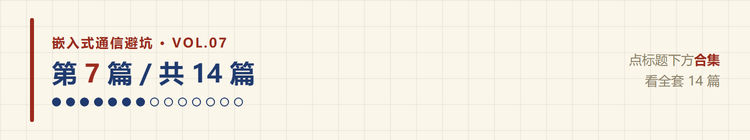
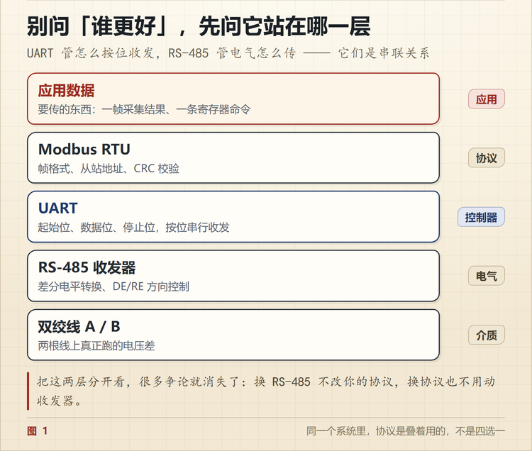
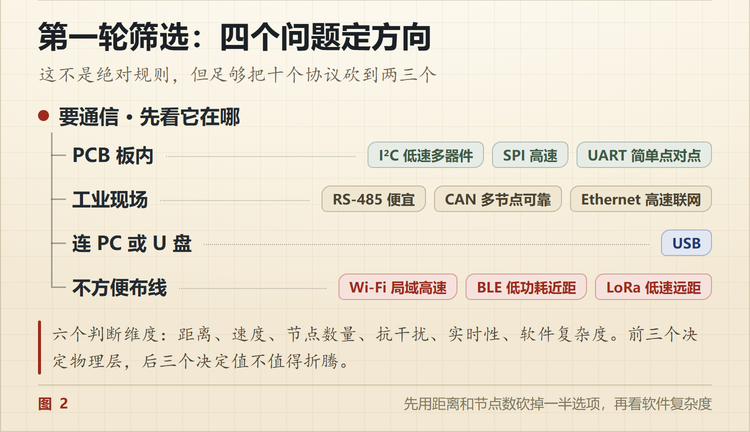

五种总线怎么选？先看这三个场景
🐵 程序小猴 · 嵌入式通信避坑 Vol.07
不是背参数，是先想清楚数据要走多远。

我手上这套设备，一块主控板上同时跑着四种通信。
I2C 挂温度传感器和 EEPROM，SPI 连 Flash，UART 接调试口和一块协处理板，柜子那边二十米外用 RS-485。
有人问过，为什么不用一种。
因为它们的距离、速率、节点数都不一样。用一种，要么贵得离谱，要么根本跑不起来。
一、先看距离，这是第一个筛子
通信方式选错，八成是没先看距离。
| 距离 | 典型场景 | 可选 |
|---|---|---|
| 几厘米 | 同一块 PCB，芯片之间 | SPI、I2C、UART |
| 几十厘米 | 两块板，同一机箱 | UART、SPI（降速） |
| 几十米 | 跨柜、跨设备 | RS-485、CAN |
| 上千米 | 厂区、车载主干 | RS-485（低速）、CAN |
距离一定，选项立刻少一半。
二、五种总线放一张表里
这五种是嵌入式最常用的。USB、以太网、无线属于另一类问题，后面单独说。
| UART | SPI | I2C | RS-485 | CAN | |
|---|---|---|---|---|---|
| 信号线 | 2 根 + 地 | 4 根 + 地，多从机各加 1 根 CS | 2 根 + 地 | 2 根（A/B） | 2 根（CANH/CANL） |
| 拓扑 | 点对点 | 一主多从，片选 | 一主多从，地址 | 多节点总线 | 多主总线，带仲裁 |
| 常见速率 | 115200 ~ 1Mbps | 几 MHz 到几十 MHz | 100k / 400k / 1M | 长距 100k，短距 10M | 1Mbps（FD 数据段更高） |
| 标称距离 | 几米（TTL） | 几十厘米 | 1 米内 | 1200 米 | 1000 米 |
| 谁决定谁说话 | 双方约定 | 主机拉 CS | 主机发地址 | 主机轮询 | 仲裁，ID 小的赢 |
| 典型器件 | 模块、调试口 | Flash、ADC、FPGA | EEPROM、RTC、传感器 | PLC、变频器、仪表 | 汽车、工控节点 |
速率和距离是反比关系。表里写的是常见值，具体能跑多少，看线材和现场。
三、三个场景，对号入座
场景一，板内挂一串传感器。
温度、湿度、RTC、EEPROM，四个器件，都低速，都要挂在同一块板上。
选 I2C。两根线全挂上，地址区分，不用额外片选。
场景二，MCU 和 FPGA 每毫秒交换一批数据。
距离几厘米，数据量不小，还要求低延迟。
选 SPI。四根线，时钟推着走，全双工，没有地址和应答的开销，几 MHz 起步。
场景三，控制柜和二十米外的执行机构。
现场有电机、变频器，干扰大，线还长。
选 RS-485。差分传输，两根线绞起来，共模干扰抵消掉。
这三个场景，正好对应三种不同的物理约束，器件数量、带宽、抗干扰。
四、最大的误区，是把不同层的东西放一起比
「UART 和 RS-485 哪个好」，这个问题本身就不成立。
因为它们不在同一层。
一个系统里，它们是这样叠起来的。

UART 管的是数据怎么按位发出去，RS-485 管的是这些位用什么电气方式传。
同样的道理，CAN 已经包含了仲裁和错误处理，它不是「RS-485 的升级版」，两者机制完全不同。
正确的问法是两层，我的数据怎么组织，底层用什么电气方式传出去。
分不清层次，就会一直在「哪个协议更快」这种问题上打转。
五、选型看六个维度
按我实际决策的顺序排。
| 维度 | 要问的问题 | 影响 |
|---|---|---|
| 距离 | 几厘米还是几十米 | 直接砍掉一半选项 |
| 节点数 | 点对点还是几十个 | 决定要不要地址和仲裁 |
| 吞吐量 | 传一个温度值还是一帧图像 | 决定带宽下限 |
| 抗干扰 | 实验室还是变频器旁边 | 决定要不要差分、隔离 |
| 实时性 | 晚 100 毫秒行不行 | 决定要不要 CAN |
| 软件成本 | 几十行还是几百行 | 决定开发周期 |
前三个决定物理层，后三个决定值不值得为它折腾。
六、一张决策树
不想看表的时候，按这个顺序问四个问题。
第一问，板内还是现场。这一问能砍掉一大半选项。
第二问，速率先到多少。板内低速选 I2C，高速选 SPI，只是点对点就 UART。
第三问，几个节点。现场单节点用 485 就够，多节点还要高可靠，才轮到 CAN。
第四问，软件成本扛不扛得住。以太网和 USB 能力最强，代价也最大，几十行代码能搞定的事别上协议栈。
顺序别反过来。先想好「我要用 CAN」再去找理由，是新手最容易犯的错。

七、三种常见的选错
板内用 RS-485。 两块板挨着，中间走 485，白加两颗收发器和一个方向控制。这种距离直接用 UART 就行。
见过一个产品，板内四个模块全用 485 串起来，理由是「485 抗干扰好」。结果每块板多两颗芯片，还要处理 DE 切换，调试时被方向控制坑了半个月。
现场用 TTL UART。 几米之内能跑，拉到十米就开始丢包。TTL 是单端信号，没有抗干扰能力。
用 I2C 传大量数据。 I2C 是给低速器件设计的，400k 的总线传一帧图像，算一下要多久就知道不可行。这种活该交给 SPI。
八、一条经验
选型不是选最好的，是选复杂度最低、还能可靠满足需求的那个。
能 UART 就别上 485，能 485 就别上 CAN，能 CAN 就别上以太网。每往上一层，硬件成本和软件复杂度都在涨。
除非需求真的到那儿了。

这套系列前面讲了 UART、RS-232、RS-485、I2C、SPI 五种，这一篇是收口。
真正的本事不是背参数，是设备出问题时知道从哪儿查起。
你现在手上这个项目，用的是哪几种？评论区说说组合。
📌 这是「嵌入式通信避坑」第 7 篇，全系列 14 篇，从串口一路讲到 CAN 和无线选型。
💬 觉得有用就点个在看，下一篇进 CAN，讲一帧从 SOF 到 EOF，每个字段在管什么。